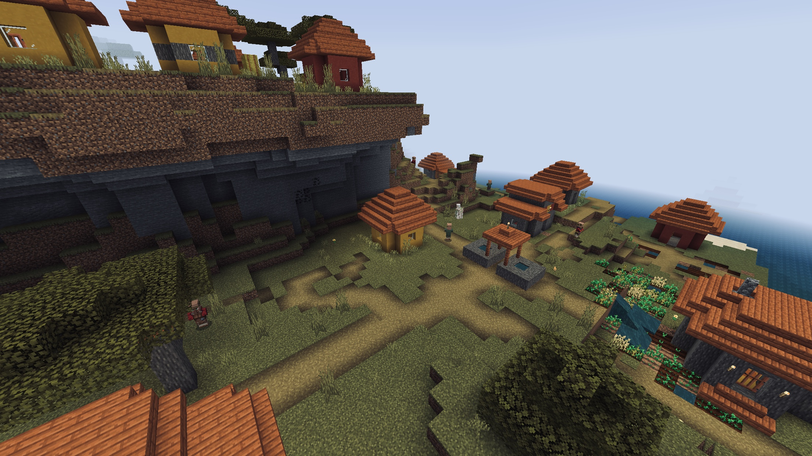

伪高斯模糊
.hh首先准备两张图片
.hh
RP/ui/start_screen.json
"default_image": {
"type": "image",
"texture": "图片路径",
"fill": true,
"size": ["100%","100%"],
"controls": []
}
RP/ui/start_screen.json
"background": {
"type": "image",
// texture/ui/background
// 可以换成无高斯模糊图片的路径
"texture": "textures/ui/background",
"layer": -100,
"fill": true,
"controls": [
{
// 这个是剪辑面板
"clip_panel": {
"type": "panel",
"size": ["100%", "100%"],
// clips_children和offset是重点
"clips_children": true,
"offset":["-70%",0],
"controls": [
{
// 这个是模糊图片
"blur": {
"type": "image",
// textures/ui/new_background
// 可以换为带有高斯模糊的图片
"texture": "textures/ui/new_background",
"size": ["100%","100%"],
// offset是重点
"offset":["70%",0],
"fill": true
}
}
]
}
}
]
}

一张是没有模糊的
.hh另一张是带有高斯模糊的 .hh（高斯模糊图片可以使用Photoshop制作）
首先把没有模糊的设为背景 .hh代码示例
在controls内添加亿点点控件：
在clip_panel控件中，有clips_children和offset属性
.ep.bb clips_children ..bb作用是让高斯模糊图片只显示在clip_panel的大小范围内，超出部分直接剪掉
..ep
.ep.bb offset ..bb (重点)
作用是改变高斯模糊显示的位置
.hhclip_panel的offset为向左移动
.hh然后blur图片控件向右移动
.hh可以发现，blur的offset与clip_panel的offset刚好相反
.hh这样模糊图片才会被面板剪辑
..ep
显示效果
.bb那么，为什么示例中的offset是70%呢？..bb .hh.hh没有模糊的图片大小是["100%","100%"] .hh面板向左移动70%，就是说面板在屏幕上仅有30%的区域显示 .hh把图片向右移动，就能显示图片左边的部分
.bb如何将高斯模糊在中间显示？..bb .hh.hh利用上方代码，简单说一下如何实现在中间显示
先全屏背景设为模糊图片 .hh假设中间部大小为["20%","20%"] .hh左边部分就是80%(100%-20%) .hh上下右部分同理 .hh将上下左右80%的部分均添加剪辑后的无模糊的图片 .hh这里就不用图片展示了
.bb易错点..bb .hh1.模糊图片与剪辑面板的offset的值是相反的 .hh2.模糊显示在左边 - 剪辑面板的offset数组X轴（第一个值）必须为负数 .hh 模糊显示在右边 - 剪辑面板的offset数组X轴（第一个值）必须为正数 .hh 模糊显示在上方 - 剪辑面板的offset数组Y轴（第二个值）必须为负数 .hh 模糊显示在下方 - 剪辑面板的offset数组Y轴（第二个值）必须为正数
.bb本次教程较难理解，建议反复多次阅读..bb .hh最后记得给UP点个关注吧(*^▽^*)